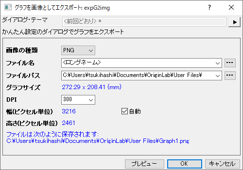
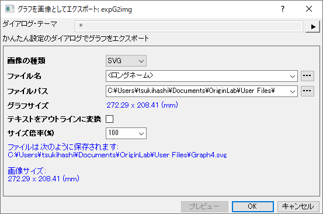

グラフのエクスポート時に詳細な設定を行う場合は、代わりにグラフエクスポートダイアログを使用することになります。
グラフを画像としてエクスポートダイアログは、現在のグラフを画像ファイルとしてエクスポートするためのより簡単なツールです。
| ラスター画像 | ベクター画像 |
|---|---|
|  |  |
グラフのエクスポート時に詳細な設定を行う場合は、代わりにグラフエクスポートダイアログを使用することになります。 |
Originは一般的な画像タイプである、PNG（デフォルト）、BMP、JPEG、TIFF、EMF、SVG、PDFをサポートしています。
エクスポートする画像のファイル名を指定します。デフォルトでは、現在のグラフのロングネームが使用されます。
エクスポートした画像ファイルを保存するパスを指定します。デフォルトでは、ユーザファイルフォルダが使用されます。
透明な背景を持つグラフをエクスポートするには、このチェックボックスを有効にします。PNGとTIFFでのみ利用できます。
エクスポートした画像の解像度を、DPI（インチ当たりのドット数）で指定します。ラスター画像形式で利用可能です (PNG, BMP, JPEG, TIFF)。
画像の幅と高さをピクセル単位で調整します。デフォルトでは、自動にチェックが入っていると元のページサイズが適用されることになります。
Note: 単位は、作図の詳細ダイアログの設定に従います。
このチェックボックスにチェックを付けると、テキスト要素がパスに変換されるため、対応するフォントをサポートしていないPCでも、テキストが正しく表示されるようになります。そうでない場合、デフォルトのフォントを表示に使用するので一部の文字フォントが他のフォントと一致しないことがあります。
ベクター画像形式で利用可能です(SVG, EMF)。
エクスポート画像のサイズを、指定した倍率 (パーセンテージ) でスケーリングします。ベクター画像形式で利用可能です(SVG, EMF)。
ダークモードが有効の場合、 ダークモードのカラー設定でグラフをエクスポートするには、このチェックボックスを有効にします。
プレビューボタンをクリックして、内部ビューアで画像エクスポートを確認します。プレビューでは以下の事がサポートされています。